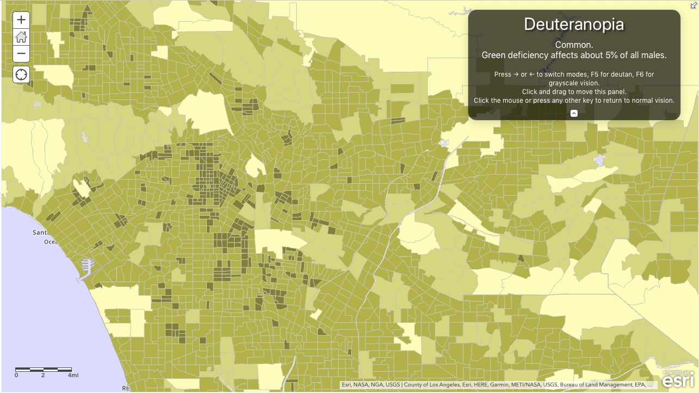
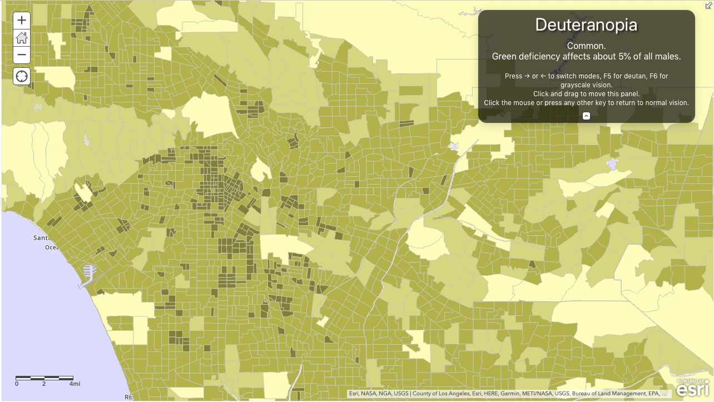

Accessible Web Mapping Apps
- Kelly Hutchins
- Tao Zhang
Make content usable for everyone regardless of abilities.
Wide range of disabilities

How is Esri doing?
- Reviewing products for compliance
- Voluntary Product Accessibility Templates (VPATs)
- Fixing accessibility issues
- Building accessible components, features, and apps
- Sharing knowledge and best practices
Web Content Accessibility Guidelines

Focus and keyboard accessibility
- WCAG 2.4.7: Interactive elements should have clear focus.
- WCAG 1.3.2: Navigation (tab) order should be logical and intuitive.
- WCAG 2.1.1: Keyboard users should be able to use functionalities using keyboard only.
- WCAG 2.1.2: Content does not "trap" keyboard focus within subsections.
{kind=link}
Default map navigation
| Action | MapView behavior |
|---|---|
| Arrow Keys | Nudge the view to left, right, up or down |
| N | Adjust the view to point north |
| A | Rotate the view counterclockwise |
| D | Rotate the view clockwise |
| + | Incrementally zoom in at the center of the map |
| - | Incrementally zoom out at the center of the map |
https://developers.arcgis.com/javascript/latest/api-reference/esri-views-MapView.html
Color and color contrast
- WCAG 1.4.1: Color is not the only visual means of conveying information.
- WCAG 1.4.3: Text needs to have contrast ratio of at least 4.5:1.
Color ramp
Use Color Oracle to simulate color blindness
 

Color ramp
Use Color Brewer to select colorblind safe colors
White text on colored background

Flipping the contrast

If an image conveys meaning, write effective alternate text.
If an image is decorative, use alt="".
Display a text description of the map
The Esri Olympia regional office is located at 111 Market St NE Suite 250 across the street from the Farmer's Market.
Provide data in an alternate format
Add example hereMap for non-sighted users
Add new info hereAutomated test with aXe

- Tests rendered page in browser
- Less false positives
- Accessible
Keyboard test
| Key | Action |
|---|---|
| Tab, Shift + Tab | Move keyboard focus |
| Enter | Click links |
| Enter, Space | Click buttons |
| Arrow keys | Move within menus, tabs, radio buttons |
Screen reader
| OS | Screen reader | Browser |
|---|---|---|
| MacOS | VoiceOver | Safari |
| Windows | NVDA | Firefox |
| Windows | JAWS | IE/Edge |